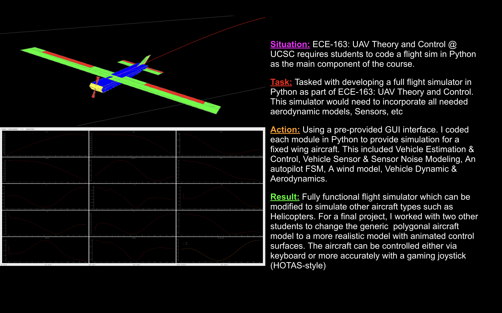
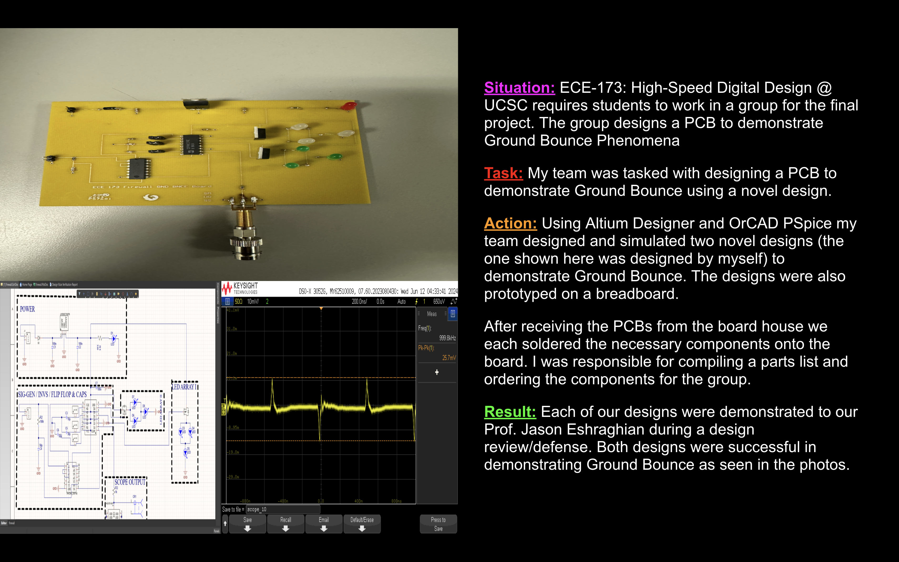

Research Work with HSC Presented to CITRIS Workforce Innovation Program Symposium
A sample of my research work at the HSC Lab was presented to the CITRIS Workforce Innovation Program Symposium.
The CITRIS Workforce Innovation Program is a highly selective internship program for UC students majoring in STEM related fields.
Students are paired with a mentor/mentoring organization and do research in a desired subject area for the summer. My area of research was FPGAs.
Others research areas include AI, Biomedical, UAVs, etc.
In this presentation, I talk about some of the hardware designs I worked on over the summer.
Watch Your Step Basys 3 FPGA Game
Simple Platformer built for and controlled by the Basys 3 FPGA. Design uses UDL Counters and Finite State Machines to control the
gameplay. Objective of the game is to avoid obstacles and collect coins. The player's "Jump" can be charged for greater effect.
In its current state the game is about 80% complete. Graphical issues such as the coin flickering and the player sinking into the floor need to be fixed.
Coin collection needs to be implemented. A "invincibility state" can be enabled via a switch so that the player does not fall into the hole.
Graphics drawn using color coding and counters. Everything you see was coded in Verilog.
This was the final project for the Logic Design course @ UCSC.
Powerline Inspection with Drones
I was a member of the 2025 CITRIS Drone Pilot Training Program @ UCSC.
Participants in the program studied for and ultimately earned a FAA Small UAS Pilot License.
Participants also took part in a practical project utilizing drones.
I joined a group inspecting the powerlines at the base of UCSC for fire danger.
Flight Simulator in Python
Flight Simulator I coded in Python for a UAV Theory and Controls elective course I
took @ UCSC. The flight simulator was the main deliverable for the course.

Simulated Toaster Oven in C
I implemented a Simulated Toaster Oven with multiple cooking states in C. This was one of the key projects
for the Embedded-C Programming course @ UCSC.
Ground Bounce PCB
I designed and tested this PCB to demonstate Ground Bounce. This was the final project
for the High-Speed Digital Design elective course @ UCSC.
